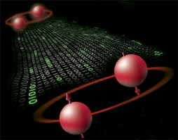

KUANTUM DOLANIKLIK
Albert Einstein’ın kuantum mekaniği konusunda çekinceleri vardı. Bunun üzerine geliştirdiği teoriye göre gelişigüzel bir uzaklıkta da olsa evrende bir noktada olan bir olay bir başkasını anında etkiliyordu. Bu ışık hızından hızlı iletişim demekti ki bu görelilik kuramı ile çelişen bir durumdu. Şimdilerde ise bu deneyi yapabiliyoruz ve bulduğumuz şey gerçekten korkutucu bir olay. Öncelikle spin (dönüş) denen olayın ne olduğunu anlamamız lazım. Tüm temel parçacıkların bir dönüşü vardır. Açısal momentuma sahipler ve uzayda belli bir yönleri var. Şimdi, bu parçacığın dönüşünü ölçebiliriz, ancak öncelikle ne taraftan ölçeceğimizi seçmemiz lazım. Ve bu ölçümün sadece iki sonucu olabilir. Ya parçacık ölçümün yapıldığı yön ile örtüşecek ki buna yukarı dönüş (spin up) diyoruz ya da parçacığın dönüşü ölçümün yapıldığı yönün tersine olacak ki buna da aşağı dönüş (spin down) diyoruz. Peki, parçacığın dönüşü dikey olmasına rağmen biz ölçümü yatay olarak yaparsak ne olur? Bu durumda parçacığın yukarı ya da aşağı dönüşü olması ihtimali yüzde 50 olur. Ve ölçümden sonra parçacık sahip olduğu dönüşü sürdürür, yani dönüşü ölçmek parçacığın dönüş yönünü de otomatikman değiştirmiş olur. Evrenin toplam açısal momentumu sabit olmak zorunda olduğu için, bir parçacığın dönüşü yukarı yönlü ölçülmüş ise aynı yönde ölçülmüş olan diğeri aşağı yönlü olması lazım. Burada belirtmek gerekir ki sadece aynı yönde ölçülmüş parçacıkların dönüşleri birbirinin tersi olur. İşte burada işler biraz garipleşmeye başlıyor. Tüm parçacıkların iyi belirlenmiş bir dönüş ile oluşmuş olduklarını düşünebilirsiniz, ancak öyle değil. Sebebi ise şu: Dönüşlerinin dikey ve birbirine ters olduğunu düşünün. Eğer ikisini de yatay olarak ölçersek, her ikisinin de yukarı yönlü olma ihtimali 50/50 olur. Yani iki ölçümün de aynı yukarı yönlü sonucu verme ihtimali yüzde 50 olur ve bu açısal momentumun korunumu yasası ile çelişir. Kuantum mekaniğine göre bu parçacıkların belirli bir dönüşleri yoktur bile. Bu parçacıklar dolanıktır, ki bu basitçe dönüşlerinin birbirinin tersi olduğu anlamına gelir. Yani bir parçacık ölçüldüğü ve dönüşü belirlendiği zaman, anında diğer parçacığın ölçümünün vereceği sonucu biliyorsunuzdur. Bu titiz bir şekilde defalarca deneysel olarak test edildi. Hangi açı ile ölçüldüğü, hangi dedektörlerin kullanıldığı ya da birbirlerinden ne kadar uzak oldukları fark etmeksizin her zaman birbirlerinin tersi sonucu verdiler.